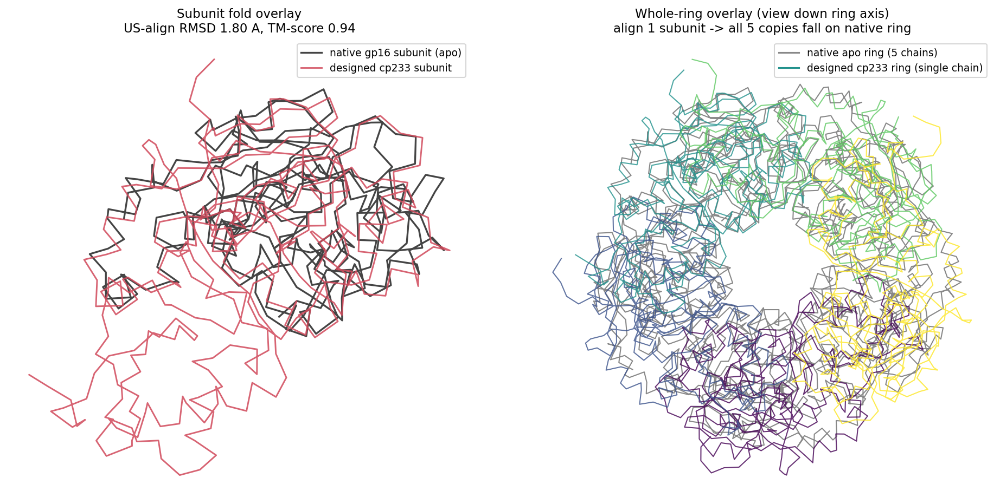
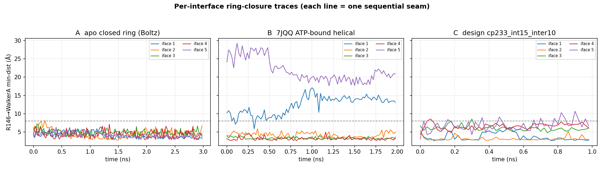
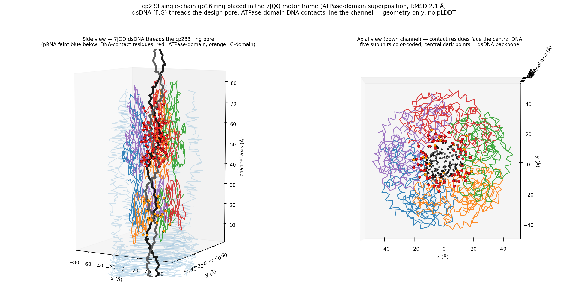
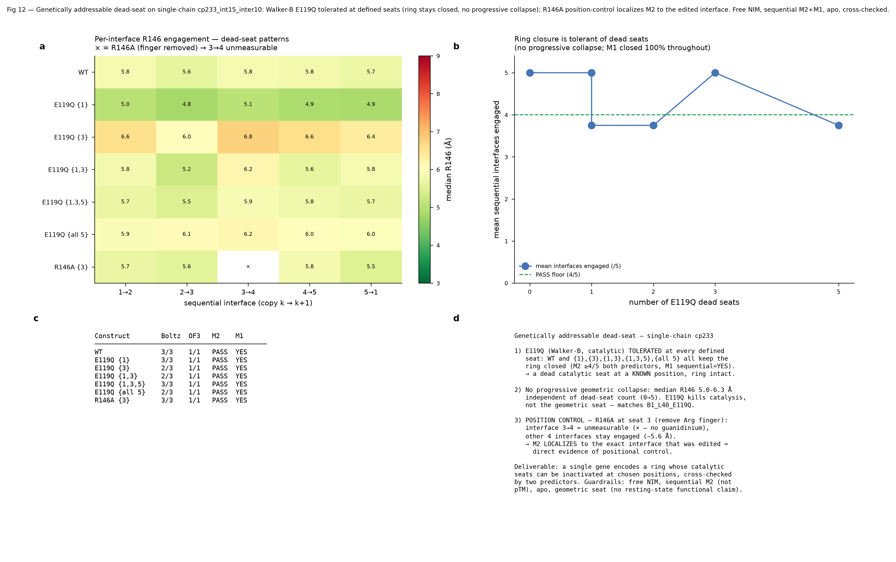
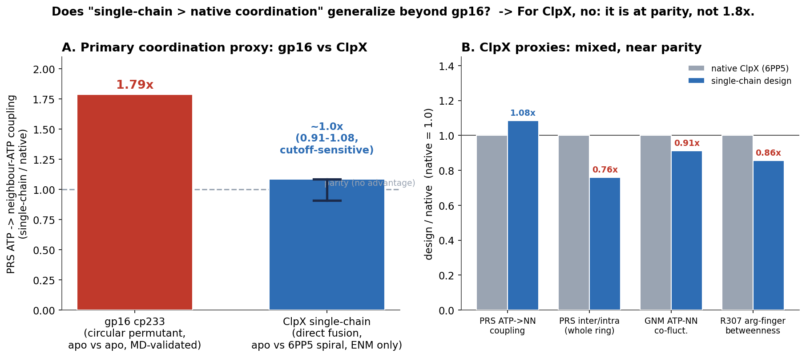
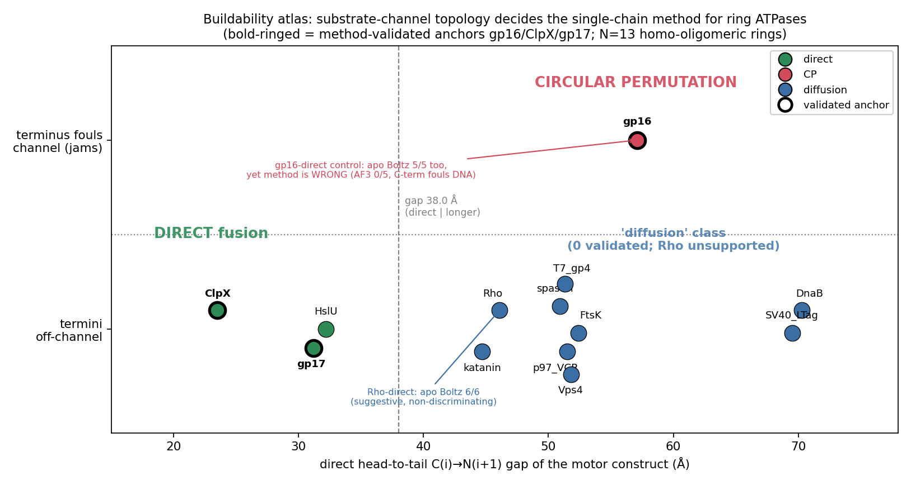
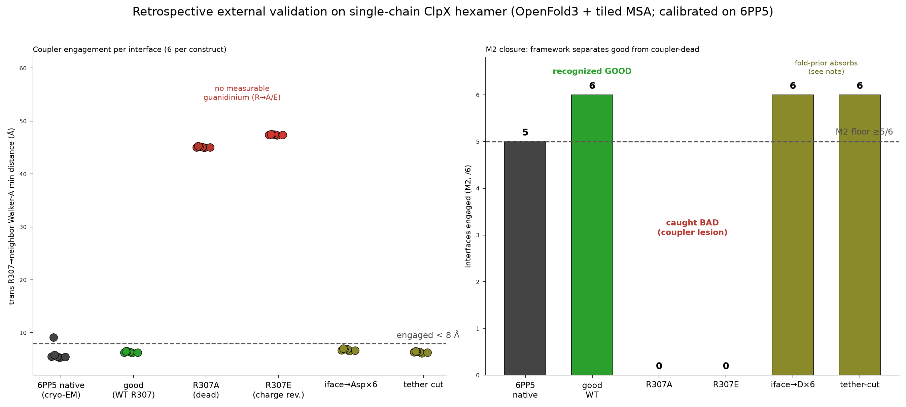
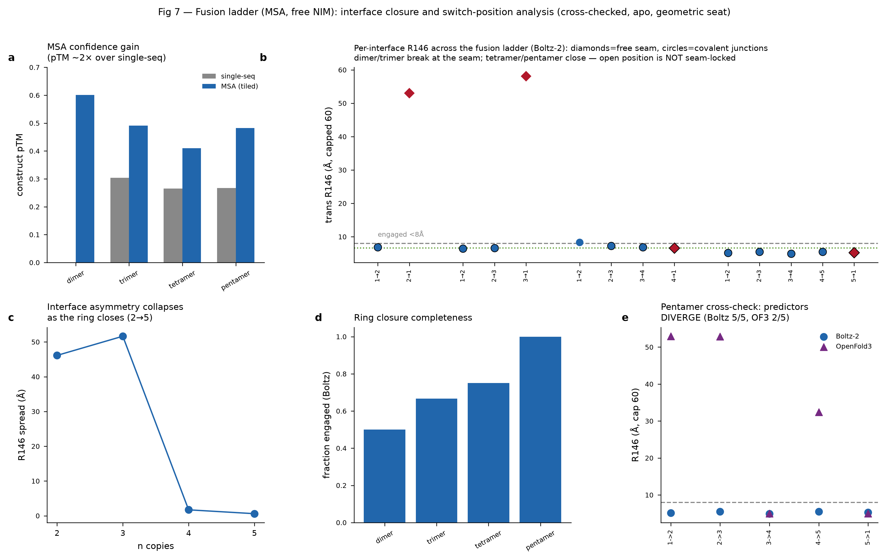
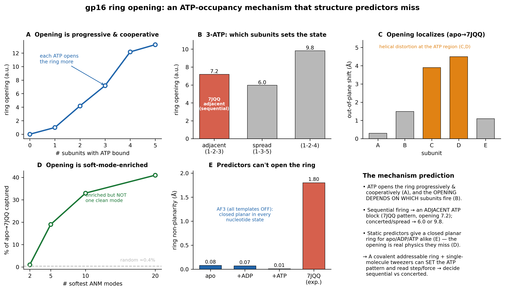

A single-chain, genetically-addressable φ29 gp16 DNA-packaging ring — designed and cross-validated end-to-end.
φ29 gp16 packs DNA at ~57 pN as a homo-pentamer. Its deepest questions are per-subunit: which seat is the "special" regulatory subunit? Is ATP hydrolysis sequential or concerted?
Fuse five protomers into a single gene: a mutation encoded in copy k lands at ring seat k — deterministically. The trick that made single-chain ClpX interpretable (Martin, Baker & Sauer 2005). Never reported for gp16.









Cross-checked, not yet wet-lab-validated — every prediction is a falsifiable hypothesis for single-molecule assays. That honesty is the point.